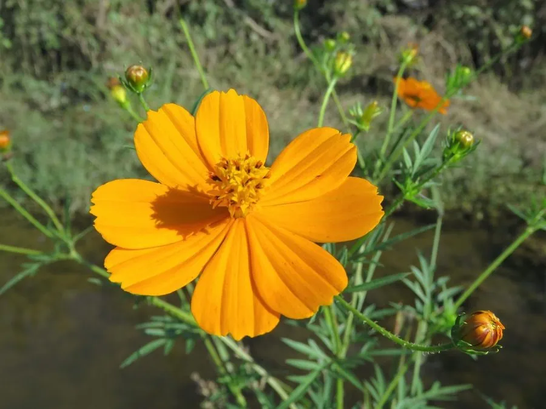

花卉与草本 · 植物界
硫华菊 Cosmos sulphureus

菊科一年生草本，花瓣橙黄鲜亮，株型高大、自播力强，是夏秋花海与路旁绿化的常见花卉，原产墨西哥。
- 分类
- 门被子植物门纲木兰纲目菊目科菊科属秋英属
- 栖息环境
- 墨西哥的向阳草原与山坡，喜温暖、阳光充足
- 地理分布
- 原产墨西哥，现世界各地栽培或归化，中国各地常见
- 保护级别
- 暂无评估
物种志
硫华菊为菊科秋英属一年生草本，株高 60–150 厘米，茎直立，多分枝。叶片二回羽状深裂，裂片较宽。头状花序单生或数个聚生，直径 3–6 厘米，舌状花橙黄、金黄或橙红色，先端有齿，花期 6–10 月；果实为瘦果，细长。
硫华菊原产墨西哥，喜阳光充足、温暖干燥的环境，耐旱耐瘠薄，适应性强，种子落地后能自播繁衍。它株型高大、花色浓烈，是花海景观、路旁绿化和庭院花境的常用植物，与波斯菊搭配可形成橙黄与粉白的层次；但植株过高时遇风易倒伏，栽培中常通过摘心控制高度；在南方，它常与波斯菊一起构成秋季花海的橙黄色底色，观赏期可达两个月。
形态与习性
- 株高60–150 厘米，茎多分枝
- 花期6–10 月
- 果期8–11 月，瘦果细长
- 光照极喜光
- 水分耐旱，忌积水
- 土壤疏松、排水良好的沙壤土，耐瘠薄
- 主要用途花海景观、路旁绿化、切花
趣味知识
- 硫华菊舌状花先端有齿，橙黄色调与波斯菊的粉白形成鲜明对比。
- 它株型高大、自播力强，种子落地后翌年常成片萌发。
- 硫华菊耐旱耐瘠薄，适应性强，是花海景观的常用材料。
- 植株过高时遇风容易倒伏，栽培中常通过摘心控制高度。